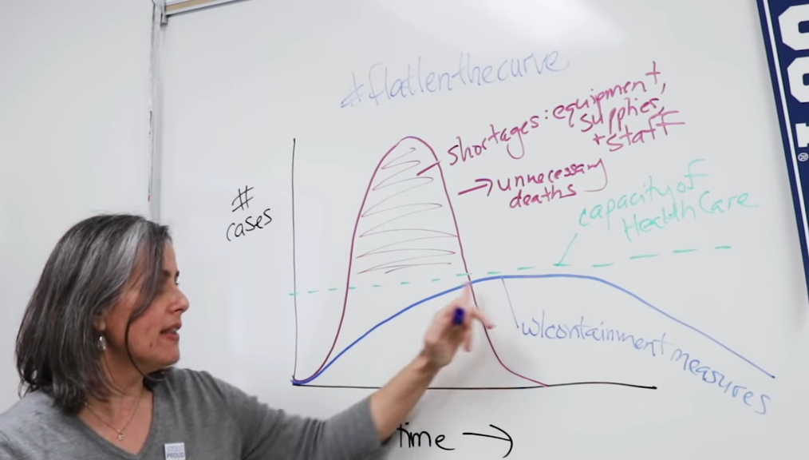

I think it is appropriate to take some time to see how the material we are learning can be applied to the current COVID-19 virus situation. Below are some videos I've put together relating some of the material to this situation. We will also be looking at how to solve differential equations numerically for the last few weeks of the course so you can expect more information then.
First some introduction to the topic from Dr. Hall in the Biology Department at UW Stout.
Models of the spread of the infection tend to follow the famous SIR (Susceptible-Infected-Recovered) model that has been around for a long while now.
In January a paper attempting to forecast spread used a variant called SEIR (E=emergent or exposed). Lancet article(pdf
Let's take a look at the basic SIR model and what this means to #flattenthecurve.
Link to Applet that goes with video below
In the above video Dr. Hall spoke about flattening the curve in the sense of getting the number of cases below the capacity threshold for providing medical care. In mathematics we often think about a flattened curve in terms of the second derivative - namely we want the second derivative to be negative. This means the spread (a rate) is slowing down, i.e. "the rate of increase is negative" and the graph of infection cases is concave down.
We can investigate this numerically with the idea of numerical derivatives we saw earlier in the course.
Jupyter notebook associated with video below: covid-derivatives.ipynb and data file: usa-covid19.csv
In Dr. Hall's video we saw her shade in a region under the infected cases graph and above the medical capacity threshold. This area is related to shortages in medical care and unnecessary deaths.
This should immediately remind us of integrals from calculus.

How can we calculate this area using the information from SIR models that may be used to forecast the spread of the disease?
This will help decision makers and other scientists understand the magnitude of the challenges we face.
Jupyter notebook associated with video below: covid-integrate-example-with-SIR.ipynb
copyright Tyler Skorczewski 2020